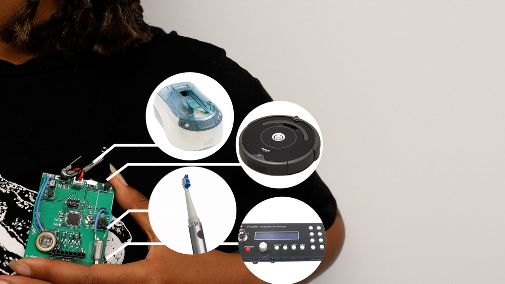
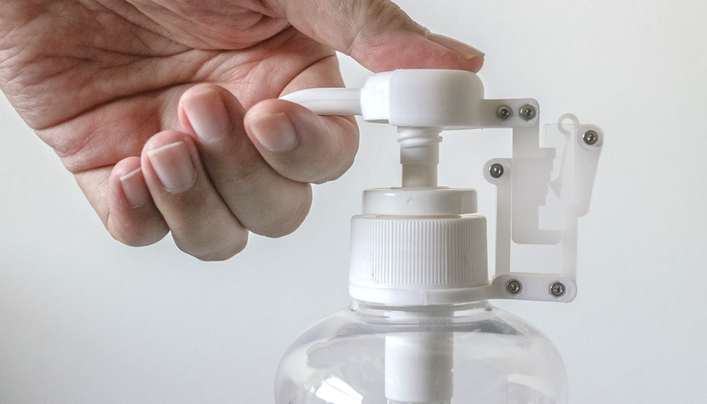
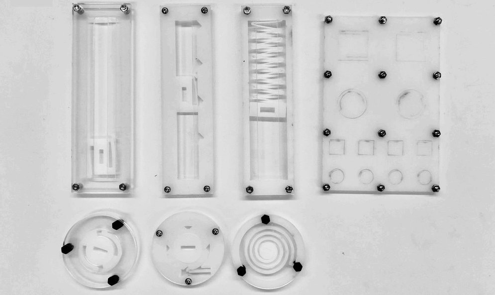
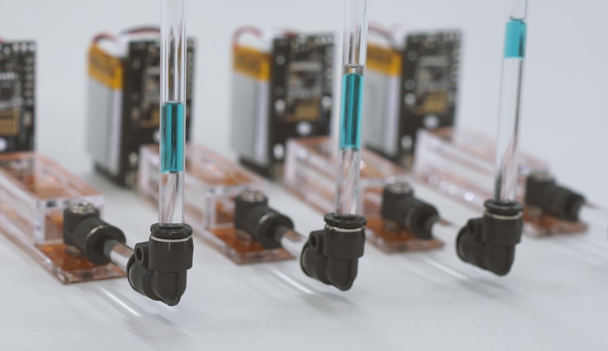

Sustainable Making in HCI and beyond: An Overview of Related Work
Webpage maintained by Zeyu Yan, Jasmine Lu, Tingyu Cheng, Pedro Lopes, and Huaishu Peng, Small Artifacts Lab, UMD, For feedback and changes, please email: zeyuy/at/umd.edu
The goal of this website is to provide a resource for newcomers in the field of sustainable
interaction design and computational fabrication so that they can quickly access recent
contributions made in the field.
This webpage is created using "Personal Fabrication Research in HCI and Graphics" as a template, we
appreciate HCI Lab @MIT CSAIL for opensourcing the template.
This webpage serves as a related work directory - the creators of this webpage do not hold the
rights for these works, please contact the authors directly.
Lookup:
+
or

ecoEDA: Recycling E-Waste During Electronics Design (ACM UIST 2023)
The amount of e-waste generated by discarding devices is enormous but options for recycling
remain limited. However, inside a discarded device (from consumer devices to one's own
prototypes), an electronics designer could find dozens to thousands of reusable components,
including microcontrollers, sensors, voltage regulators, etc. Despite this, existing electronic
design tools assume users will buy all components anew. To tackle this, we propose ecoEDA, an
interactive tool that enables electronics designers to explore recycling electronic components
during the design process. We accomplish this via (1) creating suggestions to assist users in
identifying and designing with recycled components; and (2) maintaining a library of useful data
relevant to reuse (e.g., allowing users to find which devices contain which components). Through
example use-cases, we demonstrate how our tool can enable various pathways to recycling e-waste.
To evaluate it, we conducted a user study where participants used our tool to create an
electronic schematic with components from torn-down e-waste devices. We found that participants`
designs made with ecoEDA featured an average of 66% of recycled components. Last, we reflect on
challenges and opportunities for building software that promotes e-waste reuse.
DOI
PDF
Video
Page
2022

Shape-Haptics: Planar & Passive Force Feedback Mechanisms for Physical Interfaces (ACM CHI 2022)
We present Shape-Haptics, an approach for designers to rapidly design and fabricate passive
force feedback mechanisms for physical interfaces. Such mechanisms are used in everyday
interfaces and tools, and they are challenging to design. Shape-Haptics abstracts and broadens
the haptic expression of this class of force feedback systems through 2D laser cut
configurations that are simple to fabricate. They leverage the properties of polyoxymethylene
plastic and comprise a compliant spring structure that engages with a sliding profile during
tangible interaction. By shaping the sliding profile, designers can easily customize the haptic
force feedback delivered by the mechanism. We provide a computational design sandbox to
facilitate designers to explore and fabricate Shape-Haptics mechanisms. We also propose a series
of applications that demonstrate the utility of Shape-Haptics in creating and customizing
haptics for different physical interfaces.
DOI
PDF
Video
Page

FlexHaptics: A Design Method for Passive Haptic Inputs Using Planar Compliant Structures (ACM
CHI 2022)
This paper presents FlexHaptics, a design method for creating custom haptic input interfaces.
Our approach leverages planar compliant structures whose force-deformation relationship can be
altered by adjusting the geometries. Embedded with such structures, a FlexHaptics module exerts
a fine-tunable haptic effect (i.e., resistance, detent, or bounce) along a movement path (i.e.,
linear, rotary, or ortho-planar). These modules can work separately or combine into an interface
with complex movement paths and haptic effects. To enable the parametric design of FlexHaptic
modules, we provide a design editor that converts user-specified haptic properties into
underlying mechanical structures of haptic modules. We validate our approach and demonstrate the
potential of FlexHaptic modules through six application examples, including a slider control for
a painting application and a piano keyboard interface on touchscreens, a tactile low vision
timer, VR game controllers, and a compound input device of a joystick and a two-step button.
DOI
PDF
Video
Page

ReCompFig: Designing Dynamically Reconfigurable Kinematic Devices Using Compliant Mechanisms and
Tensioning Cables (ACM CHI 2022)
From creating input devices to rendering tangible information, the field of HCI is interested in
using kinematic mechanisms to create human-computer interfaces. Yet, due to fabrication and
design challenges, it is often difficult to create kinematic devices that are compact and have
multiple reconfigurable motional degrees of freedom (DOFs) depending on the interaction
scenarios. In this work, we combine compliant mechanisms (CMs) with tensioning cables to create
dynamically reconfigurable kinematic mechanisms. The devices’ kinematics (DOFs) is enabled and
determined by the layout of bendable rods. The additional cables function as on-demand motion
constraints that can dynamically lock or unlock the mechanism's DOFs as they are tightened or
loosened. We provide algorithms and a design tool prototype to help users design such kinematic
devices. We also demonstrate various HCI use cases including a kinematic haptic display, a
haptic proxy, and a multimodal input device.
DOI
PDF
Video
Page

HydroMod : Constructive Modules for Prototyping Hydraulic Physical Interfaces (ACM CHI 2022)
In recent years, actuators that handle fluids such as gases and liquids have been attracting
attention for their applications in soft robots and shape-changing interfaces. In the field of
HCI, there have been various inflatable prototyping tools that utilize air control, however,
very few tools for liquid control have been developed. In this study, we propose HydroMod, new
constructive modules that can easily generate liquid flow and programmatically control liquid
flow, with the aim of lowering the barrier to entry for prototyping with liquids. HydroMod
consists of palm-sized small modules, which can generate liquid flow with the
electrohydrodynamics (EHD) phenomenon by simply connecting the modules. Moreover, users can
configure and control the flow path by simply recombining the modules. In this paper, we propose
the design of the modules, evaluate the performance of HydroMod as a fluid system, and also show
the possible application scenarios of fluid prototyping using this system.
DOI
PDF
Video
Page